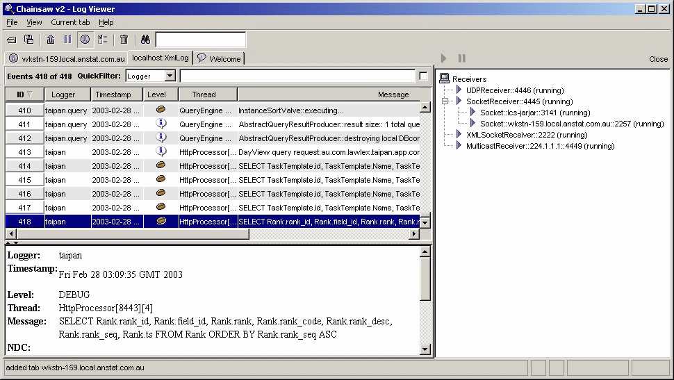

Chainsaw is a GUI log viewer and filter for the log4j package. By default it listens for LoggingEvent objects sent using the SocketAppender and displays them in a table. The events can be filtered based on:
All the details for each event can be displayed by selecting the event in the table.
Chainsaw also supports loading a events logged to a file using the XMLLayout format. This is great for analysing log files, and means you do not need to keep Chainsaw running continously. It is easy to add support for loading events from other sources like JDBC.
A picture is worth a thousand words:
.
Finally, why is it called chainsaw? Because it cuts your log (file) down to size. :-)
Chainsaw is based on the Swing API which requires JDK 1.2 or later, and also relies on the Jakarta ORO regular expression package.
You need to include the log4j.jar and the jakarta-oro.jar in the classpath.
The command line usage is:
java -D<property>=<value> org.apache.log4j.chainsaw.LogUI
You will need to configure log4j to send logging events to Chainsaw. There is an example Log4j xml configuration file included with Chainsaw, you can view it inside the Chainsaw GUI by clicking on the button in the welcome screen.
{kind=link}